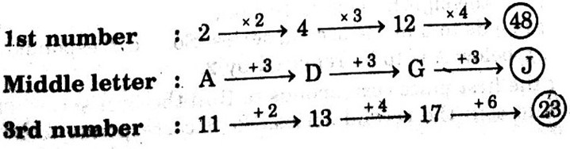

Q.1)
Based on the given arrangement which of the following groups should be next?
- N5G
- SPU
- KS#
- C4H
Answer :Option B
Given series – B @ C 7 N R % 5 $ G 6 K M & 4 S # P U 5 So, SPU is the correct answer.
Q.2)
W-144, ?, S-100, Q-81, O-64
- U-122
- U-121
- V-122
- V-128
Answer :Option C

Q.3)
Q1F, S2F, U6D, W21C, ?
- N5G
- SPU
- KS#
- C4H
Answer :Option B
Q.4)
Find the next term in series C4X, F9U, I16R, ....?
- K25P
- L25P
- L25O
- L27P
Answer :Option C
The answer will be L25O as number increases with alphabet.
Q.5)
Analyze the below arrangement carefully and try to answer below question:
S L 1 R % 4 J E # 7 M T 2 I 9 B H 3 A $ 9 F Q 5 D G 6 U S P , Suppose we reverse the order of last 15 elements, which of the following will be the fifth element to the right of 12th element from the left end?
- A
- E
- $
- #
Answer :Option C
The 18th element from the right end of the arrangement is 2, and the 7th element to the right of 2 is $.